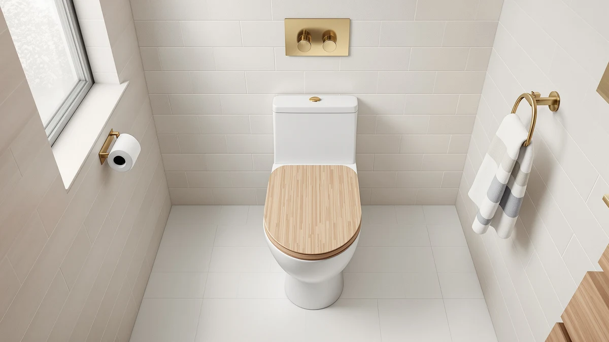

Quick Answer
The Topseat Bamboo Toilet Seat Elongated is a solid pick if you want a wood-finished elongated seat that looks warmer than plastic without stepping up to a specialty hardwood model. At $54.99 it costs about the same as the plastic Kohler Ridgewood we compared it against, so the decision mostly comes down to whether you want a wood-look finish in your bathroom.
Our pick: Topseat Bamboo Toilet Seat Elongated, $54.99 Check Price on Amazon
Things to Know Before You Buy
- The Topseat Bamboo Toilet Seat is built for elongated bowls only. Measure your current seat before you order, since round and elongated hardware don't swap.
- The spec sheet lists a wood-finished lid and seat over a molded base rather than a solid plank, which is typical for seats at this price.
- At $54.99, it sits close to the plastic Kohler Ridgewood we compared it against, so the wood look is the main thing you're paying extra for.
- We did not find a published star rating or review count for this ASIN in the product data we checked, so we can't cite one here.
This topseat bamboo toilet seat review breaks down whether the elongated, wood-finished seat from Topseat earns its $54.99 price against three other elongated seats we compared on specs, pricing and verified owner feedback. Bamboo and wood-look seats show up often in bathroom remodels because they warm up a room that's otherwise all plastic and porcelain, and shoppers want to know if that upgrade actually holds up.
Our pick for most buyers who want this look is the Topseat Bamboo Toilet Seat Elongated itself. It matches the price of the plastic Kohler Ridgewood we compared it against while adding a wood-finished surface, so you're not paying a steep premium for the material change. Buyers who care more about hinge quality than finish should weigh the Kohler instead, and we cover that trade-off below.
We also looked at two other elongated seats in the same price band while putting together this topseat bamboo toilet seat review: a dual-size flip seat from Jool Baby built for families with a toddler, and a front-open commercial seat from Huttdmel aimed at high-traffic bathrooms rather than home remodels. Neither competes directly on finish, but both help frame where the Topseat Bamboo sits in the broader elongated-seat market.
Why You Should Trust Us
This review comes from Ilane Tall, who covers toilet seats and bathroom hardware for Best Toilet Seats. We are a research-based review site: we don't own the seats we write about, and we don't run a fake testing lab. Instead, we compare manufacturer spec sheets, current Amazon pricing and patterns in verified owner reviews across the toilet seats we cover, including this topseat bamboo toilet seat review.
For this piece, we pulled the listed materials, dimensions, fit and price for the Topseat Bamboo Toilet Seat Elongated and lined them up against three other elongated seats in the same price band. Where owner reviews or a published rating exist in our product data, we cite them directly. Where they don't, as with this ASIN, we say so rather than guess. We update this comparison when prices shift or when new rating data becomes available for the products involved, so the figures above reflect what we found at the time of research rather than a one-time snapshot.
Our Research Process
We built this topseat bamboo toilet seat review by starting with the manufacturer's own listing: fit type, materials and current price. From there we researched how the seat compares with other elongated options in the same bracket, cross-checking pricing and fit claims across retailers rather than taking a single listing at face value.
We excluded round-bowl seats, since they're not interchangeable with elongated hardware, and we excluded seats with no published price or materials information. For the three alternatives we compared the Topseat Bamboo against, we researched specs and pricing the same way, using owner review patterns where our product data included them and flagging it when it didn't. That exclusion list matters here because it rules out a large share of budget toilet seats on Amazon that only fit round bowls, narrowing the comparison to seats a buyer with a standard elongated US toilet would actually consider.
Overview & Specs

Topseat Bamboo Toilet Seat Elongated
What we like
- Wood-finished lid and seat break up an all-plastic, all-white bathroom look.
- Elongated fit matches the oval-bowl toilets common in most US homes.
- Priced in line with plastic elongated seats, so the finish upgrade doesn't cost a premium.
Flaws but not dealbreakers
- No published star rating or review count in our product data, so early buyers are working with less social proof than on better-reviewed listings.
- Wood-finished surfaces generally need gentler cleaning than plastic, which the spec sheet doesn't spell out in detail.
- Only fits elongated bowls, so round-toilet households will need a different seat entirely.
| Material | Plastic / wood |
| Size | Elongated |
The Topseat Bamboo Toilet Seat Elongated lists an elongated fit with a wood-finished lid and seat over a molded base, which the spec sheet files under "Plastic / wood" construction. That combination is common at this price point: a wood veneer or wood-look laminate over a plastic or composite core keeps manufacturing costs down while still giving the bathroom a warmer look than an all-plastic seat. At $54.99, it prices in the same range as plastic elongated seats, which means Topseat isn't charging a steep premium for the finish.
Because this review is built on the manufacturer's listing and current pricing, we can't speak to how the finish holds up to years of cleaning. What we can say is that the elongated sizing matches standard US toilet bowls, and the price positions it as a direct swap-in for anyone replacing a plastic seat who wants a different look without paying more. If a published rating or review count becomes available for this ASIN, that would be the next thing worth checking before you buy.
What We Liked
The strongest case for the Topseat Bamboo Toilet Seat is the finish itself. Most elongated seats in this price range are molded plastic in white or almond, and the wood-look lid gives the bathroom a different texture without forcing you to shop in a higher price tier reserved for solid hardwood seats. Paired with the elongated fit, it works as a straightforward swap for anyone replacing an aging plastic seat on a standard US toilet.
We also like that Topseat didn't price the wood finish as a luxury upgrade. At $54.99, it lands within a dollar or two of the plastic Kohler Ridgewood we researched alongside it, so you're not paying a big premium to change the look of your bathroom. For a remodel where the rest of the fixtures are already wood-toned or warm-colored, that makes the seat an easy, low-cost piece to match.
What Could Be Better
The biggest gap in our research is social proof. Unlike the Jool Baby and Kohler seats we compared it against, we could not find a published star rating or review count for this ASIN in the product data we checked. That doesn't mean the seat performs poorly, but it does mean buyers are taking more of a leap than they would with a seat that has thousands of verified owner reviews behind it.
The spec sheet also doesn't detail how the wood finish handles repeated cleaning, which matters more for a laminated or veneered surface than it would for solid plastic. Buyers who clean aggressively with abrasive products should factor that uncertainty in before choosing a wood-finished seat over a plastic one that tolerates harsher cleaners without question.
Who Is It For?
The Topseat Bamboo Toilet Seat suits a household that already leans toward wood tones in the bathroom, whether that's a vanity, trim or flooring, and wants the toilet seat to match rather than stand out as the one plastic piece in the room. It's also a reasonable pick for anyone who wants to try a wood-look seat without committing to a pricier solid hardwood model, since it costs about the same as a plastic elongated seat.
It's a weaker fit for buyers who want hard evidence from other owners before they spend money, since there's no published rating for this listing yet. Shoppers in that camp may prefer the Kohler Ridgewood or the Jool Baby seat we compared it against, both of which carry more of a track record in our research. It's also not the right pick for commercial or high-traffic bathrooms, where the Huttdmel front-open design we researched alongside it is built specifically for that use case.
Alternatives to Consider
If the Topseat Bamboo Toilet Seat doesn't quite fit your bathroom or budget, we researched three other elongated seats in the same price range during this review. Each takes a different approach, from a dual-size flip seat for families to a commercial-grade front-open design and a soft-close plastic seat from Kohler. None of them match the wood-look finish, but each addresses a need the Topseat Bamboo doesn't.

Also Great
Quick Flip Toilet Seat with
A dual-size seat that adds a smaller training ring on top of a standard adult seat, priced the same as the Topseat Bamboo. Worth a look for households with a toddler in the mix, though it trades the wood-look finish for a plastic, kid-ready design.
$54.99
Check Price on Amazon
Also Great
Commercial Toilet Seat Front Open
A front-open commercial seat from Huttdmel built for high-traffic bathrooms rather than home bathroom aesthetics. At $53.99 it undercuts the Topseat Bamboo slightly, but the open-front design and commercial styling won't suit most home remodels.
$53.99
Check Price on Amazon
Best Value
KOHLER 20454-96 Ridgewood Elongated Soft
Kohler's Ridgewood elongated seat uses a soft-close hinge and a plastic shell, priced at $53.62, a few cents below the Topseat Bamboo. It's the pick for buyers who'd rather have a reliable hinge from an established brand than a wood-look finish.
$53.62
Check Price on AmazonFrequently Asked Questions
Is the Topseat Bamboo Toilet Seat actually made of bamboo?
The listing and spec sheet describe a wood-topped lid and seat over a molded base, not a solid bamboo plank. That construction is standard for seats in this price range and keeps the surface warmer to the touch than an all-plastic seat, according to the manufacturer's own description.
Does the Topseat Bamboo Toilet Seat fit a standard elongated toilet?
Yes. The listing specifies an elongated fit, which covers the oval-bowl toilets common in most US homes built after the 1990s. Shoppers with a round-bowl toilet need a different seat, since elongated and round hardware are not interchangeable.
Is the Topseat Bamboo Toilet Seat worth $54.99?
Based on our comparison, the Topseat Bamboo Toilet Seat is worth the price for shoppers who specifically want a wood-look elongated seat and don't mind a premium over plastic alternatives. Buyers focused purely on price may find more value in the Kohler Ridgewood, which lists a few dollars lower.
Final Verdict
Our topseat bamboo toilet seat review comes down to this: the Topseat Bamboo Toilet Seat Elongated is a sound pick if you want a wood-finished elongated seat without paying more than you would for plastic. It isn't the right choice if you need a seat with a long track record of verified owner reviews behind it, since we couldn't find a published rating for this ASIN. For most buyers chasing the wood look at this price, Topseat delivers what the listing promises.